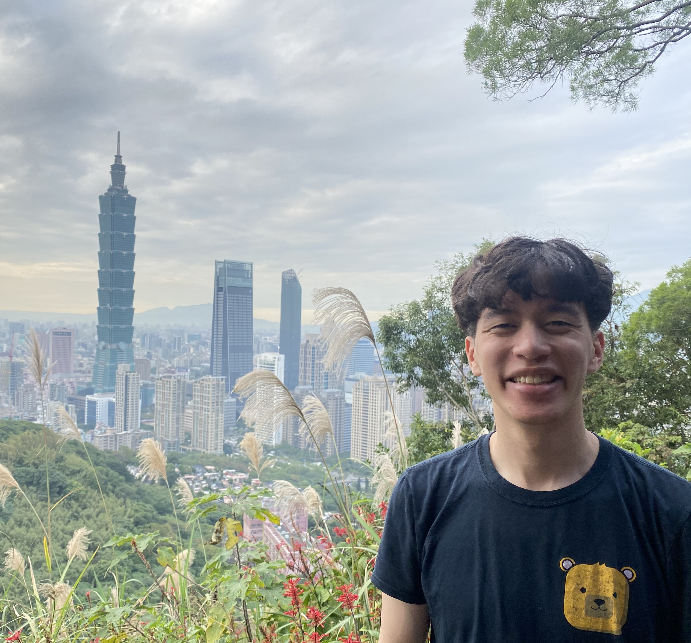
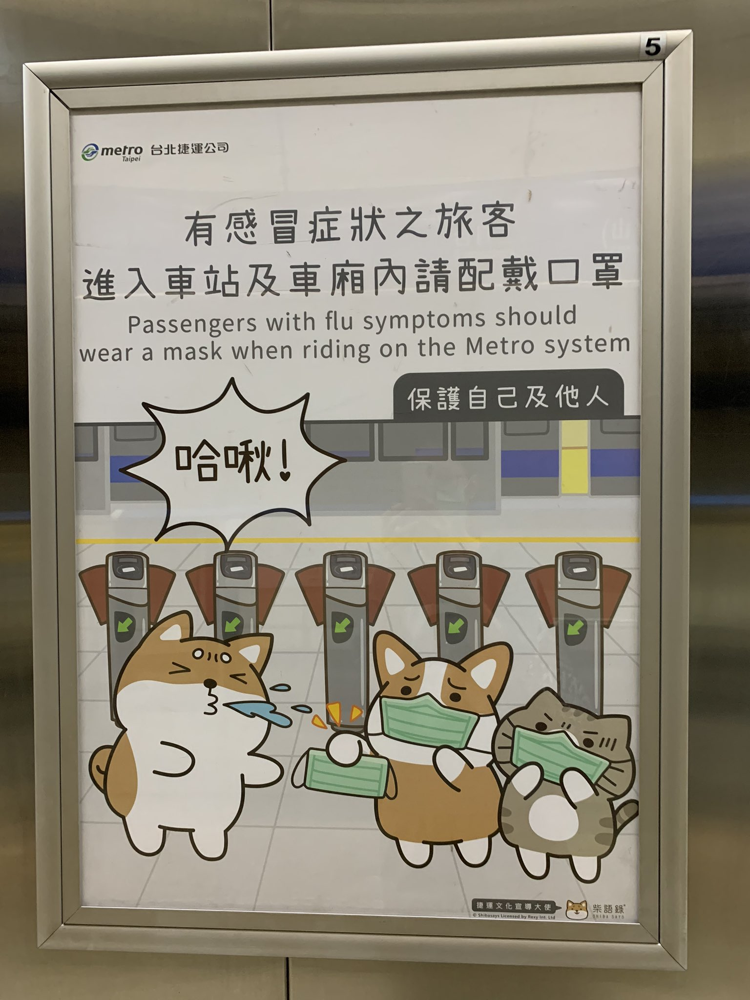
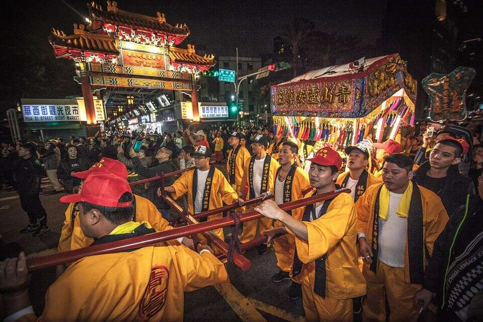
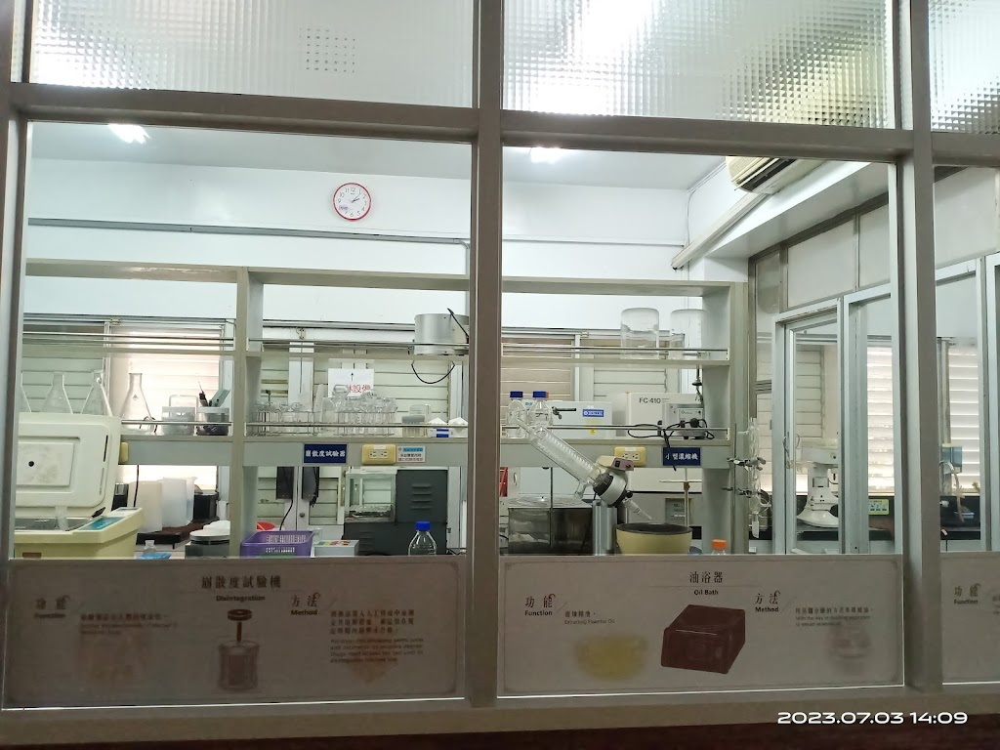
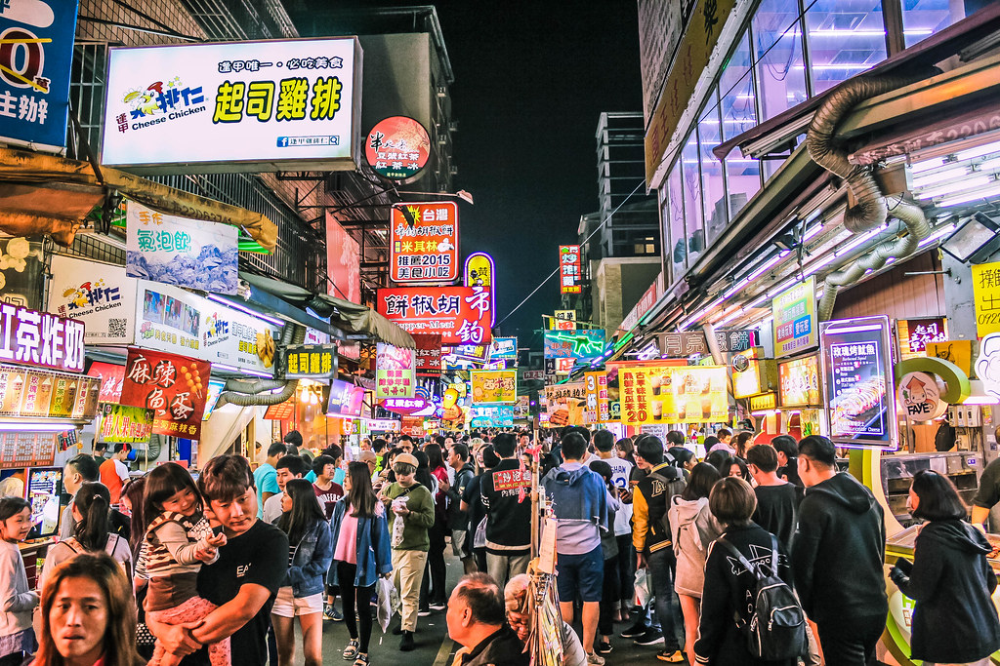
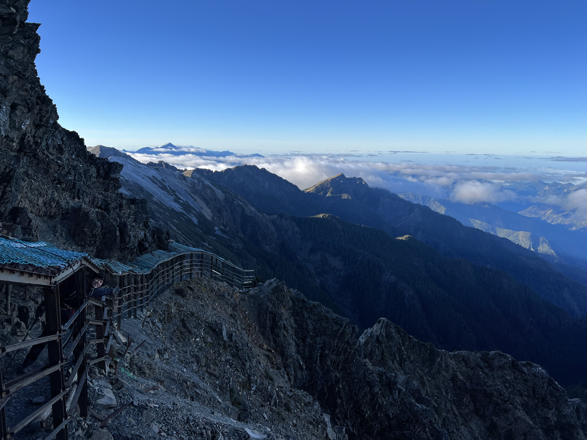

Contents
One Month in Taiwan
After spending much of 2023 learning Mandarin, I spent a month in Taiwan, with the goals of testing my language, experiencing the lifestyle, and making local friends. This blog post is about a year late, both because of procrastination and because only now do I feel that I've been around enough of Asia to contextualize it. It's a collection of observations from my time in Taiwan: starting from my initial reactions as an ignorant American to some deeper learnings from talking to locals, and finally, reflections on how it relates to me personally.
Taipei from Elephant Mountain!
Because I wanted to meet people and experience what it would actually be like to live in Taiwan, I stuck to big cities like Taipei and Kaohsiung rather than rural tourist spots like Sun Moon Lake, with the exception of 3 days that I spent in the mountains while hiking Taiwan's highest point, Yushan.
Initial observations
My first impression after a few days in Taipei was: Taiwan is just like Japan, except everyone speaks Chinese and it's more chaotic!
This is probably a pretty common American perspective and on a surface level it's true; there's heavy Japanese influence, but many parts of society are still developing. Cities are walkable, safe, and (mostly) clean. Convenience stores are everywhere, and they're the same 7-11s and Family Marts you see in Japan. People are polite and well-mannered - they line up in orderly queues on the escalator and in the subway, and there's none of the public spitting common in still-developing parts of Asia.
Transit is another huge similarity. The three biggest cities in Taiwan have great public transit systems, and the MRT in Taipei in particular feels like it's more or less copied wholesale from Tokyo: trains are modern, punctual, and frequent, the system uses an “EasyCard” which is just like the Suica that you can also use to buy things at stores, and stations all have platform gates, painted queues, and even play their own jingles when trains arrive. Not only that, but Taiwan has its own high-speed rail which uses trainsets that are built on Shinkansen tech and manufactured in Japan!
Kawaii (or 可愛) culture is also everywhere in Taiwan to the point where even politicians have to have kawaii versions of themselves. Here's one of many Taipei metro warnings that have been kawaii-fied:
One huge difference that made Taiwan feel more chaotic is the utter dominance of mopeds, which are everywhere on Taiwan roads. If America is built for the car, then Taiwan is built for the moped: much infrastructure is built with mopeds in mind, like scooter boxes at intersections, moped-only lanes and bridges, and oft-seen moped sidewalk parking blocks. While mopeds are quite convenient to get around on, they make for rather dangerous-feeling roads as they mix with cars and trucks and weave in and out of traffic. This along with what used to be fairly lax traffic law enforcement give Taiwan's roads a reputation of being a “living hell”:
The buildings and architecture are also generally older-looking
Finally, some quirks which aren't necessarily differences in development: Taiwanese dress far more casually than Japanese, and market activity is centered around large outdoor night markets with street stalls as opposed to more permanent covered markets.
I'm using Japan as a reference point because as an ignorant American, it's the most familiar modern Asian society to me, but it is true that Taiwan is more influenced by Japan than other parts of East Asia, and you can look to history to see why. Like Korea, Taiwan was a Japanese colony for the first half of the twentieth century, but unlike Korea, it was treated comparatively well due to being designated a “model colony”. Legacies include the oldest generations of Taiwanese speaking Japanese, the railroads, the name of Kaohsiung city, and architecture like the presidential building in Taipei.
Language learning
Some novel situations that I had to navigate without knowing the relevant vocab/phrases ahead-of-time (not counting conversations where I could direct the topics):
- (succeeded) Ordering coffee drinks at cafes. My go-to: a cafe latte (拿铁) with oat milk (燕麦奶)
- (succeeded) Asking where to find medication for a runny nose (流鼻涕) and other cold symptoms, then buying it
- (succeeded) Ordering beef noodle soup (牛肉面), zongzi (粽子), stinky tofu (臭豆腐), and other foods from street food stalls and restaurants
-
(succeeded) Responding to the cashier at 711 when asked if I wanted…
- A bag (袋)
- A receipt (發票印)
- To heat up the food that I bought (加热)
- To participate in the buy-one-get-one-free sale (一买一送)
- (succeeded) Calling a friend and trying to find my way to them in a gigantic mall
- (succeeded 2/4) Going on a date, asking + answering various questions about each other, flirting, and paying the bill
- (failed) Asking how ordering food, using the grills, and cooking food worked at a Yakitori place
- (failed) Figuring out what I needed to do and where I needed to go to check in / line up for my half marathon in Taichung on race day
- (failed) Fielding an angry call from my taxi driver who was peeved that we were late to a scheduled ride, and trying to convince him to stay and wait for us
Old China
What I found fascinating about Taiwan is that despite the Japanese influence, Taiwan felt more like “old China” to me than the mainland. Maybe this isn't too surprising, because the mainland not only destroyed much of its heritage during the cultural revolution, but developed extraordinarily fast after opening up, while Taiwan preserved both the island and mainland culture after the ROC retreat, and developed more gradually and perhaps more organically.
Writing
This is immediately obvious from a language perspective because Taiwan uses traditional Chinese characters still, much like Hong Kong. I also found that there were a surprising amount of signs and newspapers which read from top-to-bottom or right-to-left, whereas the mainland standardized on left-to-right long ago. Romanization is also less modernized in Taiwan; while the mainland has used Hanyu Pinyin for decades, Taiwan has an idiosyncratic mishmash of Wade-Giles for names like “Kaohsiung” (高雄, Gāoxióng in Hanyu Pinyin), Tongyong Pinyin for names like “Cijin” (旗津, Qíjīn in Hanyu Pinyin), MPS2, and Hanyu Pinyin. Adoption of Hanyu Pinyin is now more widespread but is still somewhat politicized: the use of Hanyu pinyin for stations on the new Taoyuan airport-Taipei MRT line caused protests in 2017!
Spirituality
Another much stronger “Old China” aspect in Taiwan is spirituality: Chinese folk religion is thriving in Taiwan - there are more than 33,000 temples across the 36,000 sq. km of the island, almost one temple per square kilometer, and more temples than convenience stores! They are truly everywhere - touring the rural outskirts of Tainan, I'd see nothing but farms for miles, then a gigantic temple in the middle of nowhere. Apparently, these are mass-produced in factories.
A religious parade in Taipei, via travel.taipei.
Religion is ever-present in daily life - the first Airbnb I stayed at in Taipei had religious parades go by nearly every night for the week I was there. These were boisterous affairs with tons of people walking by, cymbals clashing, and litters with idols being carried around. Praying is also commercialized: it costs a small fee, and my language buddy friend explained to me that there are specific gods to pray to and offerings to give if you're trying to find love, start a family, do well in your exams, ace your job interviews, etc. I also saw “prayer technology” like the typical charms and talismans, but also small shrines at intersections that my friend said weren't there to memorialize accident victims, but to prevent accidents from happening in the first place!
Are people actually pious? Or is religion just procedural, like Christmas in America? This one I'm still not sure about. Anecdotally, none of my local friends regularly prayed, but I was told that for many Taiwanese, stuff like praying before an exam is done because it's one of those “can't hurt” things that nobody is sure if it actually works. There was also a healthy share of superstition that showed up in small things, like my ten-story hotel not having a 4th floor.
Medicine
The clean room of the Tian-Yi traditional Chinese medicine factory in Tainan.
I was also surprised by how present traditional Chinese medicine was in Taiwan. My language buddy used it fairly regularly (including acupuncure therapy) to treat minor ailments, and I visited a traditional Chinese medicine factory in Tainan with them and was blown away by how sophisticated the factory was (we were given a tour with white-cloaked workers operating lab equipment inside of a clean room!) and how much work and machinery was going into this industry which doesn't even make scientifically supported medicine. According to wikipedia, TCM is serious business in Taiwan: practitioners are considered physicians, regulated by the same laws, can issue diagnoses, prescriptions, and diagnostic tests like X-Rays, and must obtain a 7-year degree in TCM as well as pass a dedicated exam!
Local perspectives
This was the first trip I've been on where I've been able to make last friendships with and speak the native language of locals. A few insightful conversations gave me deep cuts into Taiwanese lives.
Fengjia night market in Taichung, via https://www.alexisjetsets.com/feng-jia-night-market-taichung/.
A taxi driver in Taichung told us about how the Taichung MRT took almost 20 years (from approval in 2004 to opening in 2021) to build and still had only a single operational line. The main problems seemed to be related to costly local lawsuits that took resources to fight and added various constraints to the project - in other words, NIMBYism! Our driver expressed exasperation about the whole thing and took a moment to acknowledge that the mainland - for all other its faults - had no problems with its own infrastructure projects, because whatever it wanted to do, it could do quickly and forcefully.
In a weird way, it's encouraging to see that Taiwanese have run into some of the same problems with public infrastructure projects that we pull our hair out over in America; we think of bloated, delayed big government megaprojects like California High Speed Rail as uniquely American phenomena, but even countries with successful public transit programs can run into the same issues with similar root causes. Did the thus-far-more-successful Taipei MRT run into the same issues? How did it differ from the Taichung project (and our own projects here in the US)?
View from Mount Jade (Yushan).
On another long drive into the Yushan mountains, I talked to our driver who had previously both done the mandatory military service and worked as a construction worker. They told me that construction work is consistently shoddy and ignores regulations, and that I shouldn't trust the structural integrity of buildings in the case that there is an earthquake. 😬 They also said that if there was a war, soldiers in the Taiwanese military would break and run home, that nobody had faith in military leadership, and that there was no discipline - only money for expensive foreign equipment! I'm guessing that our driver was just a very cynical person, but it was a sobering conversation nonetheless.
Regarding the possibility of a war, I also found a sense of fatalism among my language exchange friends. For instance, my friend from Tainan had basically accepted that since it was impractical for them to move their entire lives outside of Taiwan and that they had little control over geopolitical events, that they'd simply live their lives not worrying about war, and if it happened, given the likely intensity and the small size of the island - it'd be "goodbye, world" for them!
Reflections
When I got back home, there were the “reverse culture shocks”, to be sure, of immediately missing the public transit and convenience stores - which I'd felt before after other trips - but also a deeper feeling of incompleteness, of being homesick for a place that should be foreign to me. On reflection, it's an irrational feeling, since I'd experienced at most the life of a slightly-better-camouflaged expat - working an American job remotely while enjoying an Asian low cost of living and lifestyle - but it's one that I think is increasingly common among ABCs like me.
I suspect it's also a natural result of actually investing time, talking to people, and understanding what life is really like in a place beyond the tourist veil. You risk getting an emotional attachment, even if you have only scratched the surface. Still we persist though, because that is what human connections are all about.